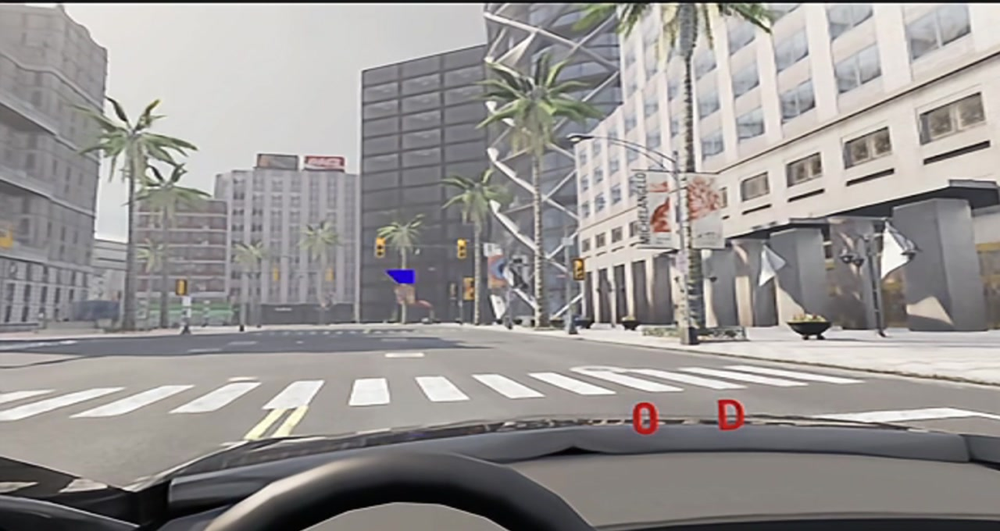
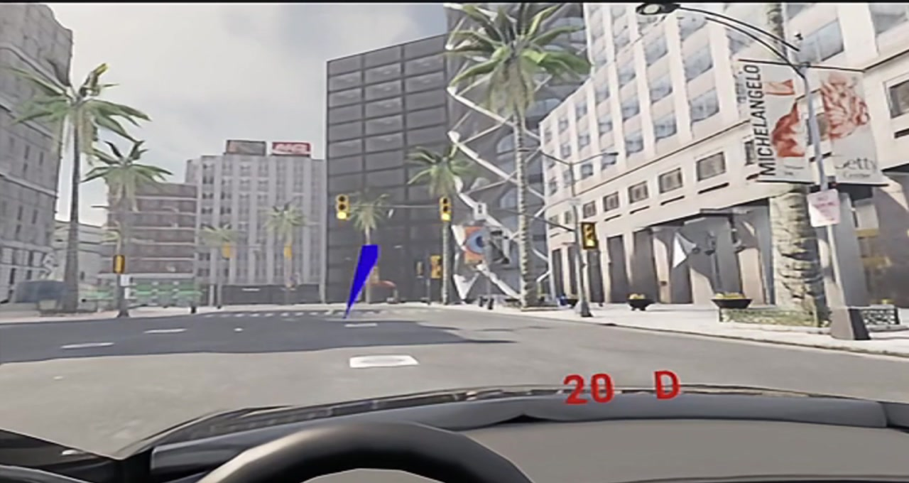
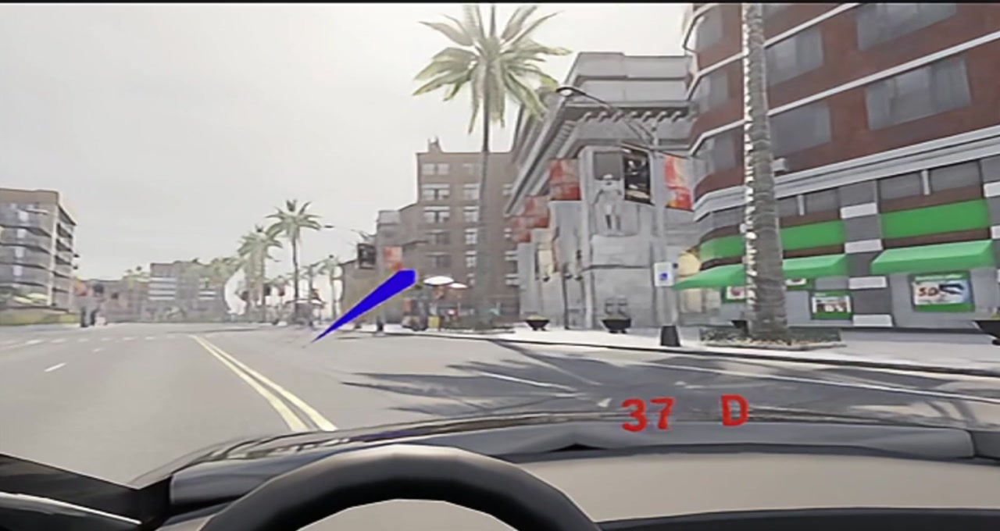

Pimax Dream Air 驾驶与眼动追踪
本页介绍如何在 OpenHUTB（DReyeVR）中使用 Pimax Dream Air 系列头显和 Crystal 手柄，包括手柄驾驶、连续调整座椅、combined gaze 眼动追踪以及蓝色注视线显示。
手柄功能适用于 Pimax SteamVR 驱动识别为 oculus_touch 的设备；眼动追踪目前已在 Pimax Dream Air + Windows + Pimax Play + SteamVR 环境中完成实机验证。
对应代码改动：
功能状态
| 功能 | Dream Air 验证状态 |
|---|---|
| VR 显示与头部追踪 | ✓ |
| 左摇杆转向、扳机油门/刹车、A 键换挡 | ✓ |
| 右摇杆连续调整座椅前后/左右 | ✓ |
| 左右握把连续降低/升高座椅 | ✓ |
| combined gaze 眼动方向 | ✓ |
| 蓝色注视线、焦点检测、录制及 Python API 数据链 | ✓ |
| 单眼原点、瞳孔直径、眼睛开合度 | PVR 1.26 接口未提供 |
效果预览
静止注视：车辆停止时，蓝色视线随眼球移动并指向道路左前方目标。

行驶跟随：车辆以约 20 km/h 行驶时，蓝色视线保持附着于头显相机，不会落在车辆后方。

注视转移：车辆继续行驶时，视线能够转向道路右侧目标，展示 combined gaze 的连续变化。

下面的视频为 Dream Air 实机内录。蓝色注视线的起点固定在头显前方，终点随眼球注视方向移动；车辆行驶时，视线会跟随相机，不会落在车辆后方。
下载或单独观看 Pimax Dream Air 眼动追踪演示
设备图样：Pimax Dream Air 头显与 Crystal 手柄置于桌面，显示器同步输出旁观画面，红字 0 R 表示当前车速 0、倒挡。

手柄驾驶：显示器为座舱视角，方向盘随左摇杆实时转动，红字 33 D 表示时速 33 km/h、前进挡。

工作原理
手柄输入
Pimax 的 SteamVR 驱动（aapvr）会把 Crystal 手柄上报为 oculus_touch。OpenHUTB 使用 SteamVR action 将手柄输入传递给 DReyeVR：
CarlaUE4/Config/SteamVRBindings/steamvr_manifest.json：声明转向、油门、刹车、换挡和座椅调整 action；CarlaUE4/Config/SteamVRBindings/oculus_touch.json：将 Crystal 手柄按键映射到 action；CarlaUE4/Config/DefaultInput.ini：将 SteamVR action 绑定到 DReyeVR 输入；- 右摇杆使用标准
vector2 position，座椅移动使用 15% 死区并按帧时间计算，避免松开摇杆后漂移或不同帧率下速度不一致。
眼动追踪
Pimax 眼动后端在 Windows 上运行时加载 libPVRClient64.dll，因此编译 OpenHUTB 时不需要安装 Pimax SDK，也不会随项目分发 Pimax 二进制文件。
后端通过 PVR 1.26 接口读取 combined gaze，将方向转换为 Unreal Engine 坐标系，并接入 DReyeVR 原有的注视射线、目标检测、记录器和 Python API。读取过程中会检查设备状态、时间戳、有限值、可信范围和数据新鲜度；设备断开或读取失败后会自动重连。
蓝色注视线
蓝色注视线作为组件附着于 VR 相机：
- 起点固定在头显前约 30 cm；
- 眼球移动只改变射线方向和终点；
- 在相机姿态更新后刷新，避免车辆行驶时射线落后；
- 样本无效、过期或时间戳为 0 时自动隐藏。
该显示方式只影响调试视线，不改变记录器或 Python API 中的眼动数据。
使用前准备
- 安装并启动 Pimax Play，连接 Dream Air 和 Crystal 手柄；
- 在 Pimax Play 中开启眼动追踪并完成眼动校准；
- 启动 SteamVR，确认头显和手柄图标为正常连接状态；
- 使用包含 OpenHUTB/hutb#3670 的版本；
- 建议先关闭不需要的高开销功能，例如三个实时后视镜。
配置
在 Unreal/CarlaUE4/Config/DReyeVRConfig.ini 中确认以下配置：
[CameraParams]
SeatMoveSpeedCmPerSecond=75.0
[EgoSensor]
DrawDebugFocusTrace=True
UseCameraRelativeGazeDisplay=True
[Pimax]
EnablePvrEyeTracking=True
AllowUnknownPimaxDevice=False
AllowedVendorIds=0x34A4
AllowedProductIds=0x0012,0x0040,0x0042,0x0044
MaxSampleAgeSeconds=0.5
GazeInvertHorizontal=False
GazeInvertVertical=False
其中 0x0044 为本次实测 Dream Air 的产品 ID。若后续验证其他 Pimax 型号，应确认其 VID/PID 后再加入白名单，不建议长期使用 AllowUnknownPimaxDevice=True。
启动方法
- 依次启动 Pimax Play 和 SteamVR；
- 确认眼动追踪开关已开启并完成校准；
- 启动模拟器（打包版示例）：
.\CarlaUE4.exe /Game/Carla/Maps/Town02?GAME=VR -vr
- 戴上头显开始驾驶；显示器同步画面可供旁观和录制；
- 检查日志中是否出现：
Using Pimax PVR eye tracking
Pimax PVR: first valid eye sample
出现以上日志且蓝色视线能够随注视方向移动，说明眼动数据链正常。
手柄键位
| 功能 | 操作 |
|---|---|
| 转向（比例） | 左摇杆左右 |
| 油门（比例） | 右手扳机 |
| 刹车（比例） | 左手扳机 |
| 倒挡/前进挡切换 | A |
| 左转向灯 | X |
| 右转向灯 | B |
| 下一个摄像机视角 | Y |
| 上一个摄像机视角 | 右摇杆按下 |
| 自车/旁观视角切换 | 左摇杆按下 |
| 座椅升高 / 降低 | 右手柄握把 / 左手柄握把 |
| 座椅前后左右移动 | 右摇杆四向 |
常见问题
能识别设备，但没有眼动数据
如果日志持续出现 timestamp-zero，或者没有 first valid eye sample：
- 退出模拟器；
- 在 Pimax Play 中确认眼动追踪开关已开启；
- 重新运行一次眼动校准；
- 若仍无数据，重启 Pimax Play 或 Pimax 眼动运行时；
- 确认眼动数据恢复后再启动模拟器。
时间戳为 0 时，后端会拒绝该样本，避免用无效数据绘制或录制视线。
有眼动数据，但看不到蓝色视线
确认 DrawDebugFocusTrace=True 和 UseCameraRelativeGazeDisplay=True，修改配置后重新启动模拟器。还应检查样本是否因时间戳停止更新而被判定为过期。
视线方向左右或上下相反
完成眼动校准后再测试。如坐标方向仍然相反，可分别调整：
GazeInvertHorizontal=True
GazeInvertVertical=True
只修改实际相反的轴。
右摇杆无法连续调整座椅
确认 SteamVR 使用当前应用的 Pimax/oculus_touch 绑定，并检查右摇杆是否绑定到标准 vector2 position action。旧的 joystick::x/y 或 dpad 绑定可能导致输入静默失效。
注视后视镜时严重掉帧
DReyeVR 的三个后视镜会额外渲染场景，VR 中开销较高。测试眼动追踪时可在车辆配置中暂时关闭：
RearMirrorEnabled=False
LeftMirrorEnabled=False
RightMirrorEnabled=False
这是性能选项，不是 Pimax 眼动功能的必要条件。
已知限制
- 眼动后端目前只在 Windows 和 Pimax Dream Air 上完成实机验证；
- PVR 1.26 当前只提供 combined gaze 和设备时间戳，单眼原点、瞳孔直径和眼睛开合度保持无效状态；
- Pimax Runtime 更新 ABI 或安装位置后，可能需要同步更新后端；
- SRanipal 和 Pimax 眼动后端同时开启时，DReyeVR 优先使用 SRanipal；
- Dream Air 初始视角位置偏高的问题不属于本次适配范围。